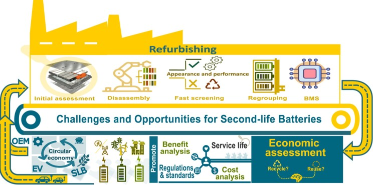
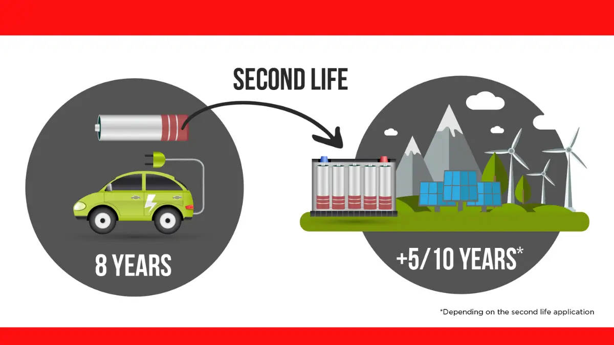
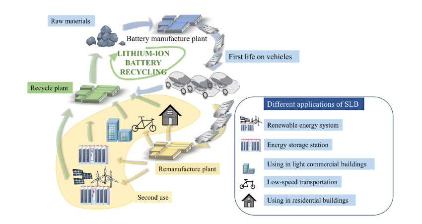
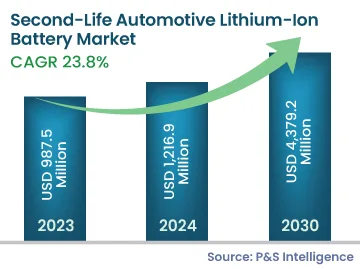
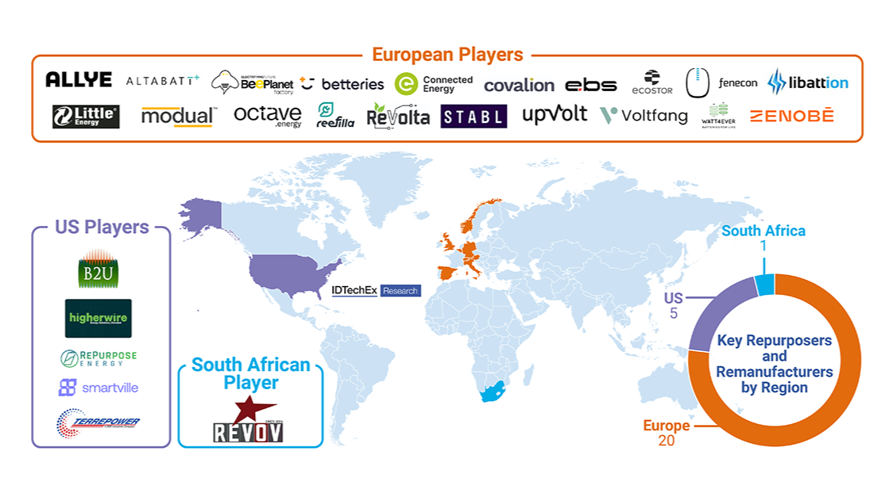
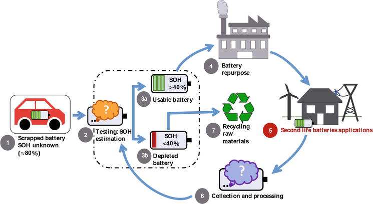
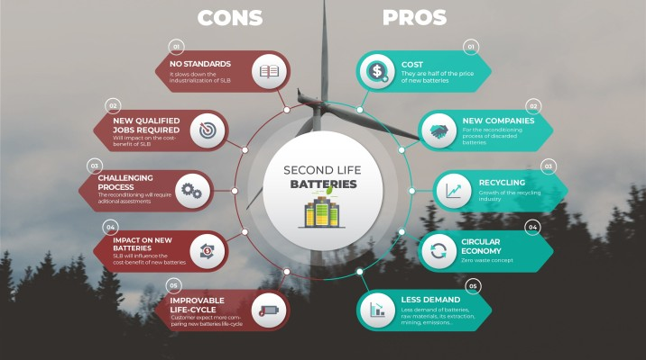

The electric vehicle revolution is creating an unexpected yet promising secondary market: repurposed EV batteries. As millions of electric vehicles hit roads worldwide, a massive wave of retired batteries with significant remaining capacity is emerging. These "second-life batteries" represent a growing multi-billion dollar opportunity that sits at the intersection of renewable energy, circular economy principles, and cost-effective energy storage solutions.
Current projections show this market expanding from $1.2 billion in 2024 to a staggering $4.7 billion by 2030, with potential applications ranging from grid-scale storage to backup power for telecom infrastructure.
The Growing Problem of Battery Waste
We’re in the middle of an EV revolution. Millions of electric vehicles are hitting the road. But here’s the thing: after about 8 to 10 years, even if a battery no longer meets EV standards, it still retains 70-80% of its storage capacity. Throwing it away? That’s wasteful and harmful.
Battery waste is becoming a ticking environmental bomb. If we don’t find innovative ways to reuse them, we’re heading toward a landfill crisis loaded with toxic chemicals.

What Exactly are Second-Life Batteries?
Second-life batteries are those that, after powering electric vehicles for 6-15 years, still retain 70-80% of their original capacity. While this reduced capacity makes them unsuitable for EVs where range is critical, these batteries remain perfectly viable for less demanding applications. Instead of disposing of these valuable assets or immediately recycling them, repurposing extends their useful life by an additional 5-10 years in stationary or lower-power applications.
Think of second-life batteries like second-hand furniture — still useful, just needs a bit of cleaning and repurposing. These batteries are no longer fit for high-performance tasks (like powering a car), but they can still be super useful in less demanding roles.
They’re collected, tested, reconditioned, and repackaged for new applications, ranging from home energy storage to powering telecom towers.

Applications Driving Demand
Energy Storage Solutions
The most promising application for second-life batteries is storing energy from renewable sources like wind and solar. These batteries help balance the intermittent nature of renewable generation, providing stability to power grids and enabling greater integration of clean energy sources. They can be configured into battery energy storage systems (BESS) that serve both utility-scale and behind-the-meter applications.
Commercial and Industrial Uses
Second-life batteries are finding strong demand in commercial settings for applications including:
- Peak shaving (reducing demand during high-rate periods)
- Optimization of renewable energy self-consumption
- EV charging infrastructure support
- Backup power systems for critical infrastructure
These applications typically have less demanding performance requirements than EVs, making them ideal for batteries with diminished but still substantial capacity.

Innovative Applications
Beyond traditional energy storage, second-life batteries are being repurposed for lower-power mobility applications such as electric scooters, golf carts, forklifts, e-bikes. and rickshaws. These alternative uses expand the potential market while making electric mobility more affordable in various contexts, particularly in developing economies.
Beyond these primary applications, second-life batteries can also serve in other important roles. They can provide backup power for telecommunications towers and data centers, ensuring uninterrupted operation for critical infrastructure. Furthermore, they can be integrated into EV charging stations to help reduce peak demand on the grid and lower charging costs for operators and users.
Market Growth and Projections
Explosive Growth Trajectory
The second-life battery market is poised for remarkable expansion. According to recent analyses, the global market is projected to grow from $1.2 billion in 2024 to $4.7 billion by 2030, representing a compound annual growth rate of 25.5%. IDTechEx similarly forecasts the market reaching $4.2 billion by 2035, driven by the increasing availability of retired EV batteries over the coming decade.

Regional Market Developments
China currently leads in scaling deployments of second-life batteries, with applications primarily focused on backup power systems, especially for telecom towers. Meanwhile, approximately 20 repurposers in Europe dominate the remainder of the global market, focusing on commercial and industrial applications. In the United States, key players like B2U Storage Solutions , Smartville Inc. , Higher Wire Inc , and TERREPOWER (formerly BBB Industries) continue developing innovative second-life battery technologies.
The Value Proposition
Economic Benefits
The cost advantage of second-life batteries is compelling. Despite recent decreases in lithium prices, first-life LFP battery modules still cost $90-120 per kWh, while retired batteries typically sell for $0-60 per kWh—a differential of 2-6 times in cost. This significant cost reduction makes energy storage more accessible for many applications where brand-new batteries would be prohibitively expensive.

The Repurposing Process
From Vehicle to Storage System
The journey of a second-life battery involves several specialized steps:
- Collection and transport: Companies like BMW Group , LAND ROVER , and Honda gather used EV batteries following strict safety regulations for hazardous materials.
- Testing and diagnosis: Specialists such as Mercedes-Benz Energy employ sophisticated tools to assess battery health and suitability for reuse.
- Disassembly: Firms like Connected Energy break down battery packs into smaller components, separating reusable parts from those needing recycling.
- Integration and installation: The final stage involves configuring batteries into new storage systems designed for specific applications.
Each step requires specialized expertise, creating opportunities for companies throughout the value chain.

Challenges to Overcome
Technical Hurdles
Despite the promising outlook, significant challenges remain. The diversity of EV battery designs complicates standardization of repurposing processes. Each manufacturer uses different chemistries, form factors, and battery management systems, requiring specialized approaches to repurposing.
Performance Considerations
Ensuring consistent long-term performance from batteries with varying degradation histories presents another challenge. Second-life systems must incorporate sophisticated management software to handle batteries with different capacities and aging characteristics within the same installation.
Competitive Landscape
As first-life battery prices continue to fall, the cost advantage of second-life options may narrow. This competitive pressure will require continuous innovation in repurposing technologies and business models to maintain market viability.

The Road Ahead
Industry Outlook
The second-life battery industry stands at an inflection point. With the electric vehicle market projected to grow significantly—with over 300 million EVs expected on roads by the end of the decade and over 60% of new cars sold being electric by 2030—the supply of retired batteries will increase dramatically. This growing supply will create abundant opportunities for repurposing, but will also demand scaling of processing capabilities and standardization of approaches.
Policy and Regulation
Regulatory frameworks are evolving to support the second-life battery ecosystem. In many regions, disposal regulations are increasingly stringent, encouraging reuse and recycling. Further policy development will likely focus on standardization of battery designs for easier repurposing, producer responsibility requirements, and incentives for second-life applications.
Conclusion
Second-life batteries represent a prime example of how circular economy principles can create new value pools while addressing environmental challenges. As the electric vehicle transition accelerates, the cascade of available batteries will enable significant growth in energy storage capacity, supporting renewable energy integration and grid resilience. For investors, manufacturers, utilities, and sustainability-focused organizations, second-life batteries offer an attractive opportunity to participate in the next phase of the clean energy revolution while maximizing the value of existing resources.
The next few years will be pivotal for this emerging industry, as early deployments demonstrate commercial viability and establish best practices. Those who develop expertise in assessment, refurbishment, and deployment of these systems now will be well-positioned to capitalize on this growing market as it matures into a multi-billion dollar industry.